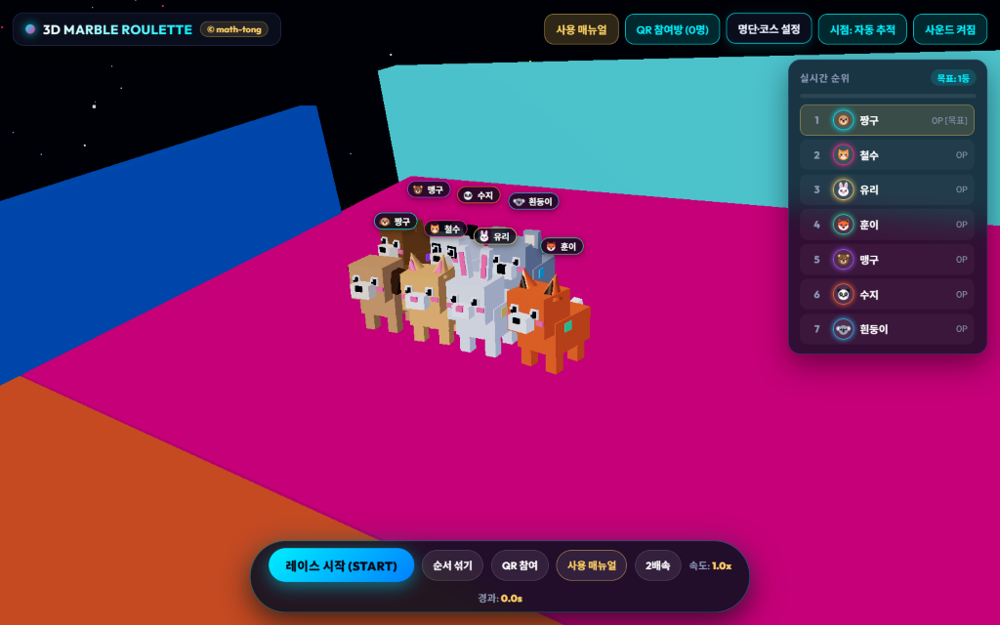

USER MANUAL · © 2026 math-tong
3D 마블 룰렛 사용자 매뉴얼
PC 단독 추첨 방법, QR 실시간 동시 참여 안내, 화면 구성 설명 및 구글 시트 연동 가이드
01. 게임 시작 방법 및 QR 동시 참여 핵심 안내
핵심 질문: QR로 여러 명이 참여할 때 경기 시작은 누가 하나요?
진행자(PC / 대형 화면)가 시작합니다. 참여자들이 스마트폰으로 QR을 스캔해 닉네임과 동물을 고르고 입장하면 호스트 화면 출발선에 캐릭터가 추가됩니다. 모든 인원이 모이면 진행자가 [입장 완료! 지금 레이스 시작] 버튼을 눌러 경기를 출발시킵니다.
QR 동시 참여 전체 진행 순서
STEP 1
진행자 (PC)
상단 또는 하단
QR 참여방 열기
STEP 2
참여자 (스마트폰)
QR 스캔 후 닉네임·동물 선택 입장
STEP 3
진행자 (PC)
입장 확인 후
레이스 시작 클릭
STEP 4
참여자 (스마트폰)
럭키박스·부스트·점프·응원 동시 입력
STEP 5
전체 화면
약 30초 주행 후 최종 당첨자 발표
진행자 안내 PC / 전자칠판
- 단독 추첨 시: 접속 즉시 하단 중앙의
레이스 시작 (START)버튼만 누르면 바로 진행됩니다. - QR 참여 시: 상단
QR 참여방버튼을 눌러 화면에 QR 코드를 띄웁니다. - 기존 샘플 명단을 지우고 QR 접속자만 참여시키려면 QR 창 하단의
기존 목록 비우고 QR만 받기를 클릭합니다. - 참여자가 모두 들어오면 QR 창 내부의
입장 완료! 지금 레이스 시작버튼을 누릅니다.
참여자 안내 스마트폰 QR
- 스마트폰 기본 카메라로 진행자 화면의 QR 코드를 스캔해 접속합니다. (앱 설치 불필요)
- 닉네임을 입력하고 16종의 동물 중 원하는 캐릭터를 선택한 뒤
레이스 입장하기를 누릅니다. - 진행자가 시작하기 전까지
진행자 시작 대기 중상태가 표시됩니다. - 경기가 시작되면
레이스 진행 중으로 전환되며, 실시간 조작 버튼을 눌러 내 캐릭터를 지원할 수 있습니다.
02. 화면 구성 안내 (메인 화면 · QR 참여방 화면)
실제 게임 화면의 주요 영역을 번호로 구분하여 설명합니다.
가. 메인 게임 화면 구성

1
2
3
4
| 영역 구분 | 주요 버튼 및 역할 설명 |
|---|---|
| 1상단 메뉴바 | 사용 매뉴얼, QR 참여방, 명단·코스 설정(설정창 열기/닫기), 시점 전환(자동 추적/전체 뷰/자유 시점), 사운드 켜짐/꺼짐을 제공합니다. |
| 23D 출발선 및 트랙 | 참여자의 3D 동물 캐릭터와 이름표가 표시되는 메인 경기장입니다. 출발 시 580유닛 코스를 약 30초 동안 내려갑니다. |
| 3우측 실시간 순위표 | 선두 진행률 게이지와 현재 순위(1~20위), 동물 캐릭터 아이콘, 누적 점수(P), 결승 도착 여부를 실시간으로 보여줍니다. |
| 4하단 메인 컨트롤 바 | 레이스 시작 (START), 순서 섞기, QR 참여, 사용 매뉴얼, 2배속(길게 누르기 또는 Space 키) 및 경과 시간을 표시합니다. |
나. 진행자용 QR 참여방 화면 구성

1
2
3
4
5
| 영역 구분 | 기능 및 사용 방법 |
|---|---|
| 1방 번호 및 진행 안내 | 현재 생성된 4자리 방 번호(예: ROOM 2167)와 진행자 시작 방식 안내 문구가 표시됩니다. |
| 2참여자 접속용 QR 코드 | 참여자가 스마트폰 카메라로 스캔하면 별도 로그인 없이 즉시 모바일 컨트롤러로 연결됩니다. |
| 3서버 상태 및 입장 명단 | 실시간 멀티 서버 연결 상태와 QR로 입장 완료한 참여자의 동물 아이콘·닉네임 목록이 실시간 추가됩니다. |
| 4진행자 레이스 시작 | 입장 완료! 지금 레이스 시작 (진행자 시작) 버튼을 누르면 QR 창이 닫히고 모든 참여자의 경기가 동시에 시작됩니다. |
| 5명단 정리 및 링크 복사 | 링크를 직접 메신저로 전달할 수 있는 참여 링크 복사, 샘플 명단을 비우는 기존 목록 비우고 QR만 받기 버튼이 있습니다. |
1. QR 접속자가 동시에 누를 수 있는 4가지 실시간 액션 안내
레이스가 시작되면 스마트폰 화면이 실시간 조작 패드로 활성화됩니다. 모든 참여자는 동시에 아래 4가지 버튼을 눌러 자기 3D 동물에게 물리 효과와 보너스 점수를 부여할 수 있습니다.
| 버튼 이름 | 대기시간 | 발동 효과 및 점수 반영 내용 |
|---|---|---|
| 랜덤 럭키박스 뽑기 | 3.5초 | 아래 4가지 효과 중 1가지가 무작위로 발동합니다. - 대박 터보: 전방 급가속 + 40P - 슈퍼 점프: 전방 도약 + 30P - 팡팡 바운스: 사방 탄성 도약 + 25P - 럭키 보너스: 즉시 50P 추가 |
| 대시 부스트 | 3.0초 | 내 3D 동물 캐릭터의 전방 이동 속도를 즉시 높이고 15P를 추가합니다. |
| 슈퍼 점프 | 2.5초 | 앞에 놓인 핀·풍차 장애물을 뛰어넘도록 위로 크게 도약시키며 20P를 추가합니다. |
| 실시간 응원 버튼 (화이팅 / 가즈아 / 역전! / 1등!) |
제한 없음 (연타 가능) |
호스트 화면 내 캐릭터 이름표 옆에 응원 문구가 즉시 팝업되며, 누를 때마다 5P가 누적됩니다. (바운스 점수 모드에서 특히 유리합니다.) |
스마트폰 1단계: 입장 화면 구조
1. 방 번호 확인: 상단
ROOM XXXX 배지2. 닉네임 입력: 참가자 본인 이름 또는 별명 입력
3. 동물 선택: 16종 풀컬러 동물 아이콘 중 1개 선택
4. 입장 완료:
레이스 입장하기 클릭스마트폰 2단계: 실시간 조작 패드 구조
1. 내 캐릭터 및 경기 상태:
진행자 시작 대기 중 → 레이스 진행 중 자동 전환2. 스킬 버튼 3종: 럭키박스 · 대시 부스트 · 슈퍼 점프 (남은 쿨타임 초 표시)
3. 응원 버튼 4종: 쿨타임 없이 연속 터치하여 점수(+5P) 적립
2. 구글 시트(Google Sheets) 및 엑셀/CSV 명단 불러오기 안내
명단·코스 설정 화면 구성 (상단 [명단·코스 설정] 클릭 시 열림)

1
2
3
4
| 1참여자 직접 입력 | 이름*가중치 형식으로 쉼표(,) 또는 줄바꿈으로 구분해 입력합니다. (예: 김철수*2, 이영희*3, 박민수) |
| 2구글 시트 & 파일 불러오기 | 공유된 구글 시트 URL을 붙여넣거나 .csv, .txt, .json 파일을 드래그해 한 번에 명단을 반영합니다. |
| 33D 메가 코스 선택 | 레인보우 메가 오비 / 자이언트 풍차 캐니언 / 터보 하이퍼 범퍼 / 메가 드롭 3단 폭포 중 선택합니다. |
| 4추첨 방식 & 당첨 등수 | 골인 순위 또는 바운스 점수를 고르고, 1등·꼴찌·지정 등수·무작위 등수를 설정합니다. |
구글 시트(Google Sheets) 연결 3단계
- 구글 시트 표 작성: 1열에
이름, 2열에가중치(숫자)를 입력하거나 1열에만 이름을 쭉 적습니다. (첫 행 제목이름,가중치는 자동 제외됩니다.) - 공유 권한 설정: 구글 시트 우측 상단 [공유] 클릭 → 일반 액세스를 '링크가 있는 모든 사용자 (뷰어)'로 변경 → [링크 복사]를 누릅니다.
- 게임에 불러오기: 게임 상단 [명단·코스 설정] → 구글 시트 입력칸에 복사한 URL을 붙여넣고 [시트 불러오기]를 클릭하면 즉시 명단과 3D 동물이 생성됩니다.
참고: 학교/사내 구글 워크스페이스 계정에서 외부 공개 공유가 제한되어 있다면, 구글 시트 메뉴의 [파일] → [다운로드] → [쉼표로 구분된 값(.csv)]으로 내려받은 뒤 설정 창의 점선 영역으로 드래그하세요.
3. 추첨 방식(골인 순위 / 바운스 점수) 및 당첨 결과 화면 안내
| 추첨 방식 | 동작 및 우승자 선정 기준 |
|---|---|
| 골인 순위 (Finish Rank) | 580유닛 길이의 경사 3D 트랙을 약 30초 동안 내려와 결승선을 목표 순위(기본 1등)로 통과하는 순간 우승이 확정됩니다. |
| 바운스 점수 (Bounce Score) | 주행 중 핀(+10P), 범퍼·풍차(+25P), 부스트 패드(+20P), 점프 패드(+30P), 골인 보너스 및 QR 스마트폰 액션 점수를 모두 합산하여 모든 동물이 결승선을 통과한 뒤 최고 점수 순위로 당첨자를 결정합니다. |
당첨 결과 화면 구성

1
2
3
| 1당첨 캐릭터 & 이름 | 최종 당첨된 동물의 풀컬러 캐릭터 아이콘, 참여자 이름, 획득 점수 및 바운스 횟수가 표시됩니다. |
| 2종합 점수 TOP 5 | 골인 1등과 점수 1등을 나란히 비교해 보여주고, 전체 참여자 중 상위 5명의 점수와 바운스 기록을 요약합니다. |
| 3다시 추첨하기 | 순서를 자동으로 무작위 섞은 뒤 같은 인원으로 새 경기를 즉시 시작합니다. |
4. 자주 묻는 질문 (FAQ)
- Q. QR 코드를 스캔했는데 호스트 화면에 참여자가 올라오지 않습니다.
QR 참여방 하단에[연결됨] 실시간 멀티 서버문구가 표시되어 있는지 확인해 주세요. 공용 네트워크 방화벽이 웹소켓(8084 포트)을 차단하는 환경에서는 모바일 데이터가 연결된 스마트폰 또는 같은 PC 브라우저 탭 간 접속을 이용해 주세요. - Q. 한 사람이 QR로 여러 번 입장하면 중복으로 들어가나요?
아닙니다. 같은 닉네임으로 다시 입장하면 인원은 추가되지 않고 마지막에 고른 동물 캐릭터로 변경됩니다. - Q. 경기를 좀 더 빠르게 끝내고 싶을 때는 어떻게 하나요?
하단 컨트롤 바의2배속버튼을 누르고 있거나 키보드Space키를 누르고 있는 동안 2.2배속으로 빠르게 진행됩니다.